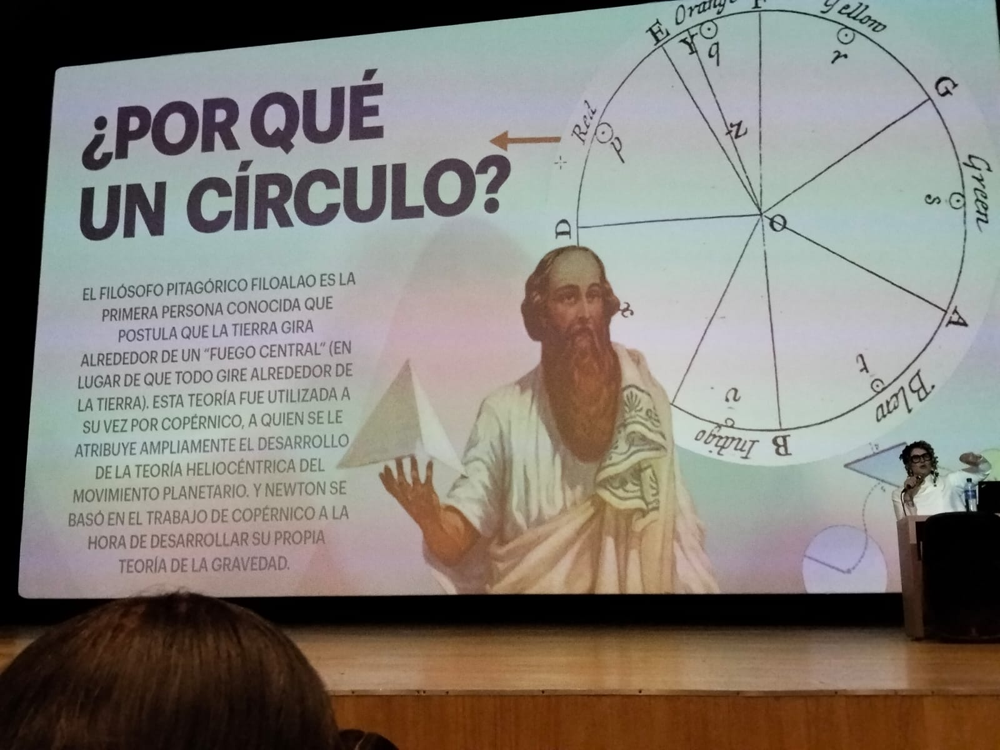
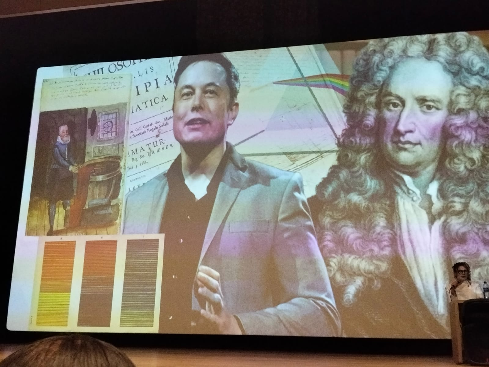
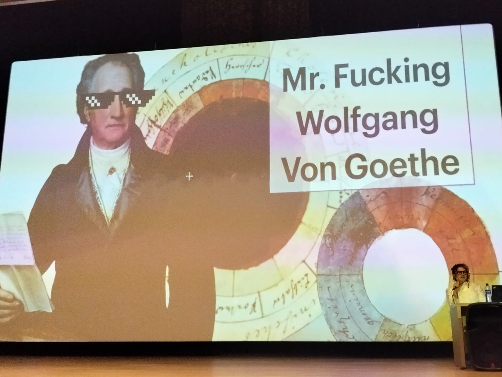
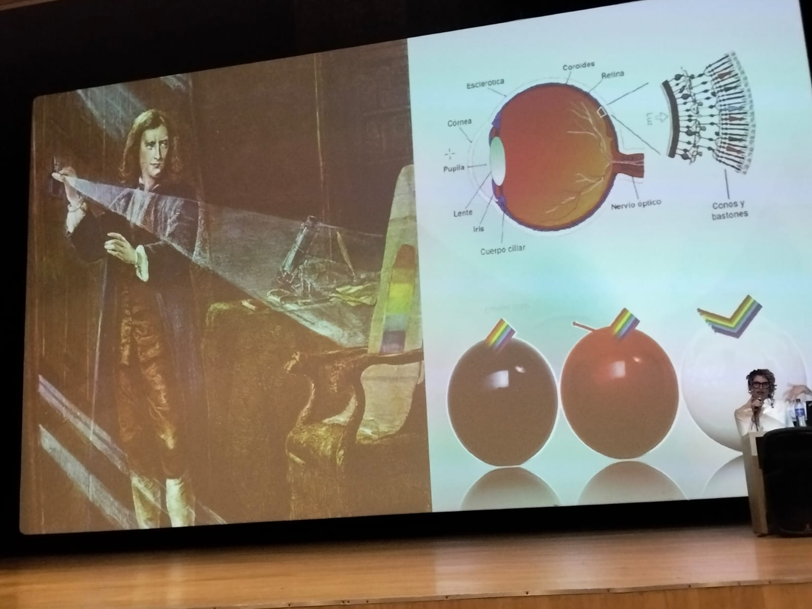
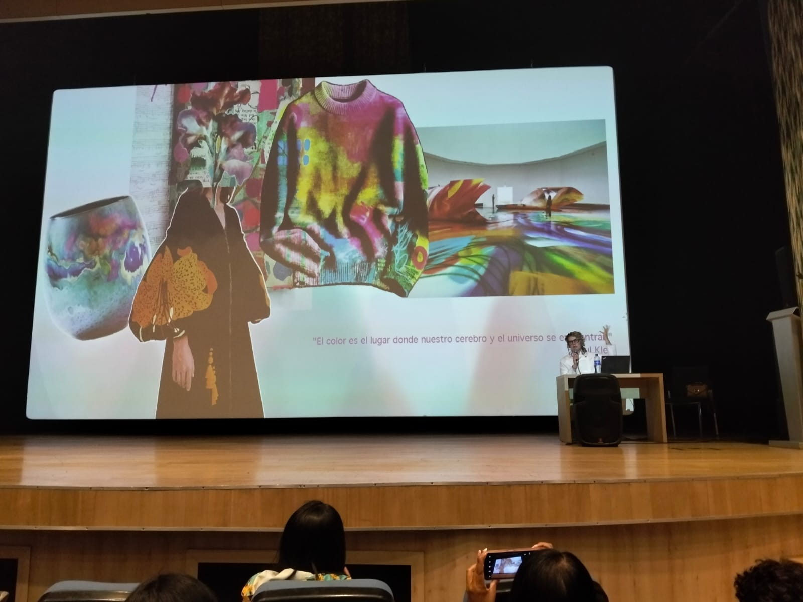
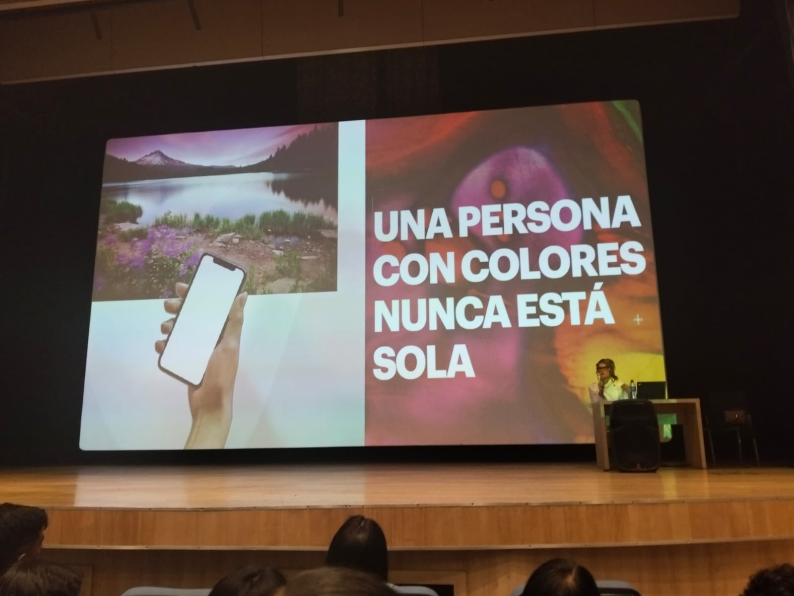
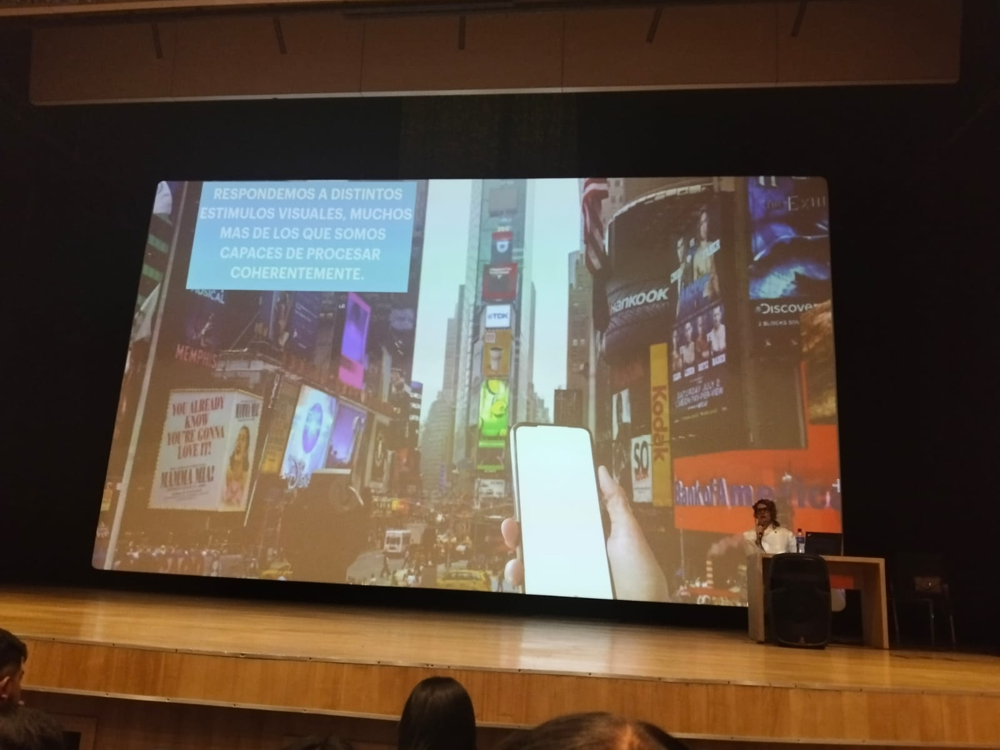
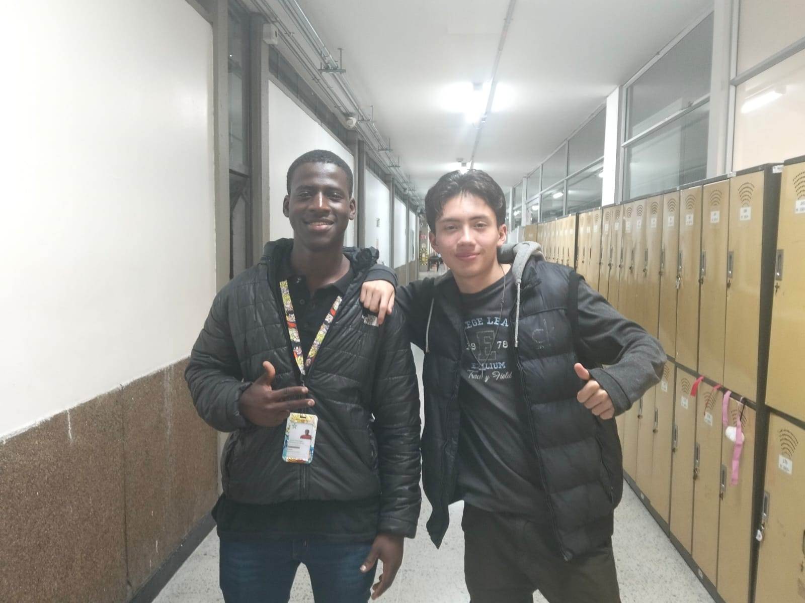
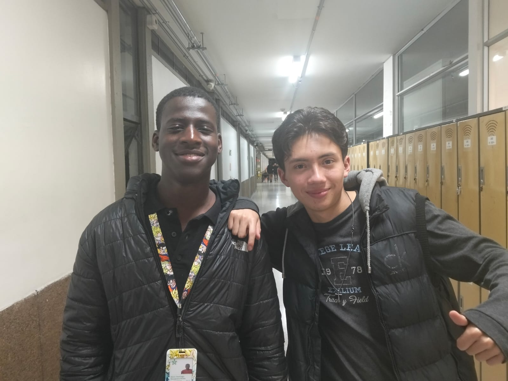

Sara Viloria · Colorista Certificada Pantone
EL
COLOR
ES UN
LENGUAJE
La historia del círculo cromático: de Pitágoras a Pantone, un viaje por la ciencia, el arte y la percepción humana.
Descubrir¿QUÉ
ES EL
COLOR?
.jpeg)
RAE
Sensación producida por los rayos luminosos que impresionan los órganos visuales y que depende de la longitud de onda.
Oxford Dictionary
La apariencia que tienen las cosas y que resulta de la forma en que reflejan la luz.
Principio fundamental
Es más fácil definir cómo nos hace sentir algo, que explicar lo que significa en sí mismo.
Sara Viloria
Una persona con colores nunca está sola.
LA
HISTORIA
DEL CÍRCULO
Desde la antigua Grecia hasta hoy, grandes mentes transformaron nuestra comprensión del color.
Filolao de Crotona
El filósofo pitagórico fue la primera persona conocida en postular que la Tierra gira alrededor de un "fuego central".

Isaac Newton
Newton demostró que la luz blanca contiene todos los colores del espectro al pasarla por un prisma.

Goethe
El poeta y científico alemán publicó su Teoría de los Colores, enfocándose en la percepción psicológica y emocional del color.

Pantone
El sistema de clasificación de colores más reconocido del mundo.
.jpeg)
ISAAC
NEWTON
& EL COLOR
El científico más influyente en la historia del color tenía una vida personal sorprendentemente turbulenta.

CUALQUIER
COMBINACIÓN
FUNCIONA
Las 6 armonías fundamentales del color
Monocromático
Un solo tono en diferentes saturaciones. Elegante y cohesivo.
Complementario
Colores opuestos en el círculo. Alto contraste y máximo impacto.
Triádico
Tres colores equidistantes. Vibrante y balanceado.
Análogo
Colores adyacentes. Armónico y visualmente cómodo.
Tetrádico
Cuatro colores en cuadrado. Rico y complejo.
Split Complementario
Un color más los dos adyacentes a su complementario. Dinámico y sofisticado.
.jpeg)

"COLOR
ES
DIOS, ARTE
Y VIDA"
— Sara Viloria
¿POR QUÉ
ES IMPORTANTE
SABER DE COLOR?
Objetivar lo subjetivo
El color nos permite traducir emociones, percepciones y estados de ánimo en un lenguaje visual compartido y comunicable.

Productos y servicios efectivos
Áreas gráficas, textil, ilustración, diseño, publicidad, colorimetría y alimentaria.

Inspiración administrada
Utilizar el entorno como una fuente de inspiración bien administrada, reconociendo patrones cromáticos en la naturaleza y la cultura.
.jpeg)
SARA
VILORIA
Licenciada en Artes Visuales, diplomada en Ilustración y Arte en su expresión territorial. Colorista Certificada por Leatrice Eiseman, Directora Ejecutiva del Pantone Institute.
Ha trabajado como Coordinadora de Educación del Museo de Artes Visuales MAVI de Santiago, Mediadora Cultural para el Departamento de Pueblos Originarios y Curadora de Arte.
Pintora, poeta y escritora. Ganadora de la Beca Fundación Neruda (2021) y el Premio Lily Peter Fellowship (USA). Autora de Color y Acuarela y Cartas para Siena.
MOMENTOS ESPECIALES


"